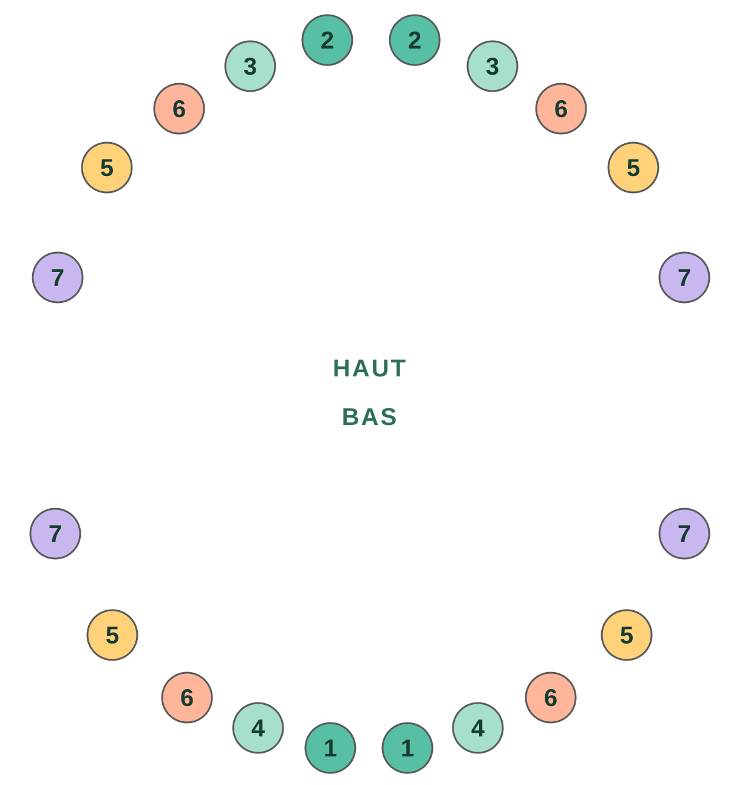

Sur cette page · 9 sections
En bref
La plupart des bébés ont leur première dent vers 6 mois, même si elle sort le plus souvent entre 4 et 12 mois, et que certains bébés en bonne santé l'ont un peu plus tard. Ce sont généralement les incisives centrales du bas qui sortent en premier, et les 20 dents de lait sont toutes là vers 2-3 ans. Beaucoup de bébés ne suivent pas l'ordre des tableaux, et ce n'est presque jamais grave. Consultez si aucune dent n'est sortie à 18 mois.
- Première dent
- ~6 moisle plus souvent entre 4 et 12 mois
- Sortent en général en premier
- Incisivescentrales du bas
- Dents de lait
- 20toutes là vers 2-3 ans
- Consultez si
- 18 moiset toujours aucune dent
Quand sort la première dent
La première dent apparaît en général vers 6 mois. Mais « vers » est large ici : certains bébés en ont une dès 4 mois, d'autres arrivent à 1 an ou un peu plus sans aucune dent, et les deux cas sont normaux. La génétique joue beaucoup : si vos dents (ou celles de votre partenaire) ont percé tard, il est probable que ce soit aussi le cas pour votre bébé.
Que les dents sortent plus tôt ou plus tard ne dit rien du développement de votre bébé ni de la santé de ses futures dents.
Dans quel ordre sortent-elles en général
Les livres décrivent cet ordre habituel, par paires :

| Dents | Âge approximatif |
|---|---|
| 1Incisives centrales du bas | 6-10 mois |
| 2Incisives centrales du haut | 8-12 mois |
| 34Incisives latérales (haut et bas) | 9-16 mois |
| 5Premières molaires | 13-19 mois |
| 6Canines | 16-23 mois |
| 7Deuxièmes molaires | 23-33 mois |
Quand l'ordre n'est pas celui des livres
Ce tableau est une moyenne de nombreux enfants, pas un calendrier que votre bébé doit respecter. En pratique, beaucoup d'enfants choisissent leur propre ordre : celles du haut sortent d'abord, une canine apparaît avant les incisives latérales, ou une molaire prend de l'avance. Quand cela arrive, il est facile de s'inquiéter. Presque toujours, cela ne veut rien dire.
Nous l'avons vécu de près : chez un bébé de notre famille, les molaires du bas sont sorties en premier, et les incisives latérales ne sont apparues qu'un mois et demi plus tard. Pendant ces semaines, le trou se remarquait et faisait réfléchir. Au final, elles sont sorties toutes seules, et il n'y avait rien.
Ce qui mérite une consultation, ce n'est pas l'ordre, mais un long moment sans aucune dent ou quelque chose qui vous inquiète. Nous y revenons plus bas.
Notez quand chaque dent apparaît
Gardez-le dans le journal de Raffy avec ses repas, son sommeil et sa croissance, et ayez-le sous la main à la prochaine consultation.

Symptômes des poussées dentaires
Certains bébés font leurs dents sans que personne s'en rende compte ; d'autres le vivent plus mal. Dans les jours qui précèdent la sortie d'une dent, il est fréquent que bébé :
- Bave plus que d'habitude et ait la peau du menton irritée.
- Porte tout à la bouche et veuille mordre.
- Ait la gencive gonflée ou rouge.
- Soit plus irritable ou dorme un peu moins bien.
Les dents donnent-elles de la fièvre ? On l'a toujours dit, mais ce n'est pas le cas. Quand une dent sort, la température peut monter de quelques dixièmes, sans atteindre la fièvre. Si votre bébé a 38 °C ou plus, de la diarrhée, des vomissements ou un rhume, ne mettez pas cela sur le compte des dents et consultez comme vous le feriez à tout autre moment.
Et les fesses irritées ? C'est une autre croyance très répandue, mais rien ne prouve que les dents en soient la cause. L'érythème fessier est généralement dû à l'humidité, aux frottements ou à un changement dans les selles, et se traite comme d'habitude.
Comment soulager bébé
- Massez sa gencive avec un doigt propre pendant quelques minutes.
- Donnez-lui un anneau de dentition ferme, rafraîchi au réfrigérateur, jamais au congélateur : le froid extrême peut abîmer la gencive.
- Essuyez souvent la bave avec un linge doux pour éviter les irritations.
- S'il mange déjà des aliments solides, quelque chose de froid et de mou (comme un fruit écrasé et frais) peut l'apaiser, toujours sous surveillance.
- S'il a très mal, demandez à votre pédiatre s'il peut prendre du paracétamol et à quelle dose selon son poids.
Ce qu'il faut éviter
- Colliers et bracelets d'ambre ou de dentition : rien ne prouve qu'ils soulagent, et la FDA et l'AAP mettent en garde contre un risque d'étouffement et de strangulation.
- Gels ou crèmes à la benzocaïne ou à la lidocaïne : la FDA (l'agence américaine des médicaments) en déconseille l'usage pour les poussées dentaires : ils apportent peu ou pas de bénéfice et peuvent causer des problèmes graves, comme une anomalie du sang qui réduit l'oxygène (méthémoglobinémie).
- Comprimés ou gels « homéopathiques » pour les dents : rien ne prouve qu'ils fonctionnent et ils peuvent contenir des substances nocives.
- Tremper la tétine ou l'anneau de dentition dans du sucre, du miel ou de l'alcool. Par ailleurs, le miel ne doit pas être donné avant 1 an à cause du risque de botulisme.
Sécurité pédiatrique : quand consulter le pédiatre
- À 18 mois, aucune dent n'est sortie.
- Fièvre de 38 °C ou plus, diarrhée ou vomissements : ne l'attribuez pas aux dents. S'il a moins de 3 mois et atteint 38 °C, appelez tout de suite.
- Il refuse de manger ou de boire, ou mouille beaucoup moins de couches que d'habitude.
- Une dent sort cassée, tachée ou d'une couleur inhabituelle, ou bébé naît avec une dent.
- Quelque chose vous inquiète, même si ce n'est pas dans cette liste.
Cet article est éducatif et ne remplace pas l'avis de votre pédiatre.
Questions fréquentes
Est-il normal que mon bébé n'ait pas de dents à 1 an ?
Oui. Certains bébés en bonne santé ont leur première dent après 1 an. Parlez-en lors de la consultation, et consultez si aucune dent n'est sortie à 18 mois.
Est-il normal que les molaires sortent avant les incisives ?
Cela peut arriver et c'est presque toujours sans importance. L'ordre des tableaux est une moyenne ; beaucoup d'enfants suivent le leur et les dents manquantes finissent par sortir quelques semaines ou quelques mois plus tard.
Les dents donnent-elles de la fièvre ?
Elles peuvent faire monter la température de quelques dixièmes, mais ne causent pas de fièvre de 38 °C ou plus. S'il en a, cherchez une autre cause avec votre pédiatre.
Combien de temps durent les douleurs pour chaque dent ?
Elles se font en général sentir quelques jours avant et pendant la sortie de la dent, puis passent.
Quand commencer à lui laver les dents ?
Dès la première dent, deux fois par jour, avec une brosse à dents pour enfant et une quantité de dentifrice fluoré de la taille d'un grain de riz.
Sources
- American Academy of Pediatrics · HealthyChildren.orgTeething: 4 to 7 months (en anglais)
- American Dental Association · MouthHealthyBaby teeth (en anglais)
- American Dental Association · MouthHealthyPrimary tooth development : tableau des âges d'éruption (PDF, en anglais)
- FDASafely soothing teething pain in infants and children (en anglais)
- NHS (Royaume-Uni)Baby teething symptoms (en anglais)
Article vérifié à partir de ces sources le 11 nov. 2026. Contenu éducatif, pas un avis médical. Politique éditoriale